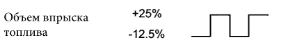
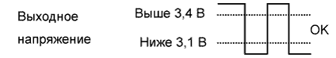
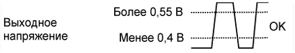
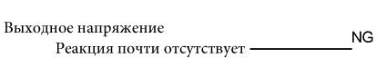

DTC P0171 Чрезмерное обеднение смеси в системе (ряд 1) |
DTC P0172 Чрезмерное обогащение смеси в системе (ряд 1) |
DTC P0174 Чрезмерное обеднение смеси в системе (ряд 2) |
DTC P0175 Чрезмерное обогащение смеси в системе (ряд 2) |
| № DTC | Условие обнаружения DTC | Неисправный участок |
| P0171 P0174 | При прогретом двигателе и стабильных сигналах обратной связи о соотношении воздух-топливо коррекция подачи топлива приводит к значительной погрешности в сторону обеднения (логика диагностирования за 2 поездки). |
|
| P0172 P0175 | При прогретом двигателе и стабильных сигналах обратной связи о соотношении воздух-топливо коррекция подачи топлива приводит к значительной погрешности в сторону обогащения (логика диагностирования за 2 поездки). |
|
| Информация на дисплее (датчик) | Объем впрыска топлива | Состояние | Напряжение |
| AFS Voltage B1S1 или AFS Voltage B2S1 (датчик состава топливовоздушной смеси) | +25% | Обогащение | Менее 3,1 В |
| AFS Voltage B1S1 или AFS Voltage B2S1 (датчик состава топливовоздушной смеси) | -12,5% | Обеднение | Более 3,4 В |
| O2S B1S2 или O2S B2S2 (подогреваемый кислородный датчик) | +25% | Обогащение | Более 0,55 В |
| O2S B1S2 или O2S B2S2 (подогреваемый кислородный датчик) | -12,5% | Обеднение | Менее 0,4 В |
| Корпус | Выходное напряжение датчика состава топливовоздушной смеси (датчик 1) | Выходное напряжение подогреваемого кислородного датчика (датчик 2) | Наиболее вероятное место нахождения неисправности |
| 1 |   |  | - |
| 2 |  |
| |
| 3 |
| ||
| 4 |
|
| 1.ПРОВЕРЬТЕ, НЕ ВЫВОДЯТСЯ ЛИ ДРУГИЕ DTC (ПОМИМО DTC P0171, P0172, P0174 ИЛИ P0175) |
Подсоедините портативный диагностический прибор к DLC3.
Включите зажигание (IG) и портативный диагностический прибор.
Войдите в следующие меню: Powertrain / Engine and ECT / Trouble Codes.
Считайте коды DTC.
| Результат | Следующий шаг |
| P0171, P0172, P0174 или P0175 | А |
| P0171, P0172, P0174 или P0175 и другие DTC | B |
|
| ||||
| А | |
| 2.ПРОВЕРЬТЕ МЕСТА СОЕДИНЕНИЙ ШЛАНГА СИСТЕМЫ ПРИНУДИТЕЛЬНОЙ ВЕНТИЛЯЦИИ КАРТЕРА |
Проверьте соединения шланга системы принудительной вентиляции картера.
|
| ||||
| OK | |
| 3.ПРОВЕРЬТЕ СИСТЕМУ ВПУСКА |
Проверьте систему впуска на предмет утечки вакуума.
|
| ||||
| OK | |
| 4.ВЫПОЛНИТЕ ДИАГНОСТИКУ В РЕЖИМЕ ACTIVE TEST С ПОМОЩЬЮ ПОРТАТИВНОГО ДИАГНОСТИЧЕСКОГО ПРИБОРА (УПРАВЛЕНИЕ СООТНОШЕНИЕМ ВОЗДУХ-ТОПЛИВО) |
Подсоедините портативный диагностический прибор к DLC3.
Запустите двигатель и включите портативный диагностический прибор.
Прогрейте двигатель на 2500 об/мин в течение приблизительно 90 секунд.
Войдите в следующие меню: Powertrain / Engine and ECT / Active Test / Control the Injection Volume for A/F Sensor.
Выполните испытание "Control the Injection Volume for A/F Sensor" в режиме холостого хода двигателя (для изменения объема впрыска топлива используйте кнопки ВПРАВО и ВЛЕВО).
Контролируйте выходные напряжения датчика состава топливовоздушной смеси и подогреваемого кислородного датчика (AFS Voltage B1S1 и O2S B1S2 или AFS Voltage B2S1 и O2S B2S2), отображаемые на экране диагностического прибора.
| Информация на дисплее прибора (Датчик) | Объем впрыска топлива | Состояние | Напряжение |
| AFS Voltage B1S1 или AFS Voltage B2S1 (датчик состава топливовоздушной смеси) | +25% | Обогащение | Менее 3,1 |
| AFS Voltage B1S1 или AFS Voltage B2S1 (датчик состава топливовоздушной смеси) | -12,5% | Обеднение | Более 3,4 |
| O2S B1S2 или O2S B2S2 (подогреваемый кислородный датчик) | +25% | Обогащение | Более 0,55 |
| O2S B1S2 или O2S B2S2 (подогреваемый кислородный датчик) | -12,5% | Обеднение | Менее 0,4 |
| Состояние из AFS Voltage B1S1 или AFS Voltage B2S1 | Состояние из O2S B1S2 или O2S B2S2 | Состояние соотношения воздух-топливо и состояние датчика состава топливовоздушной смеси | Пропуск зажигания | Предполагаемый участок неисправности | Следующий шаг |
| Обедненение/обогащение | Обедненение/обогащение | Нормальное состояние | - | - | C |
| Обеднение | Обеднение | Фактическое соотношение воздух-топливо – обедненное | Может иметь место |
| А |
| Обогащение | Обогащение | Фактическое соотношение воздух-топливо – обогащенное | - |
| |
| Обеднение | Обедненение/обогащение | Неисправность датчика состава топливовоздушной смеси | - |
| B |
| Обогащение | Обедненение/обогащение | Неисправность датчика состава топливовоздушной смеси | - |
|
|
| ||||
|
| ||||
| А | |
| 5.СНИМИТЕ ПОКАЗАНИЯ ПОРТАТИВНОГО ДИАГНОСТИЧЕСКОГО ПРИБОРА (COOLANT TEMP) |
Подсоедините портативный диагностический прибор к DLC3.
Включите зажигание (IG) и портативный диагностический прибор.
Войдите в следующие меню: Powertrain / Engine and ECT / Data List / All Data / Coolant Temp.
Снимите показание в режиме Data List дважды - при холодном и прогретом двигателе.
|
| ||||
| OK | |
| 6.ПРОВЕРЬТЕ РАБОТУ ДАТЧИКА МАССОВОГО РАСХОДА ВОЗДУХА |
Проверьте датчик массового расхода воздуха (Нажмите здесь).
|
| ||||
| OK | |
| 7.ПРОВЕРЬТЕ ДАВЛЕНИЕ В ТОПЛИВНОЙ СИСТЕМЕ |
Проверьте давление в топливной системе (Нажмите здесь).
|
| ||||
| OK | |
| 8.ПРОВЕРЬТЕ, НЕТ ЛИ УТЕЧКИ ОТРАБОТАВШИХ ГАЗОВ |
Проверьте, нет ли утечек отработавших газов из выпускного коллектора и выпускных труб.
|
| ||||
| OK | |
| 9.ВЫПОЛНИТЕ ПРОВЕРКУ ИСКРЫ НА МАССУ И ПРОВЕРЬТЕ ЗАЖИГАНИЕ |
Проверьте систему зажигания (Нажмите здесь).
|
| ||||
| OK | |
| 10.ПРОВЕРЬТЕ ТОПЛИВНУЮ ФОРСУНКУ В СБОРЕ (ВПРЫСК ТОПЛИВА И ОБЪЕМ) |
Проверьте топливную форсунку (Нажмите здесь).
|
| ||||
| OK | |
| 11.ПРОВЕРЬТЕ ДАТЧИК СОСТАВА ТОПЛИВОВОЗДУШНОЙ СМЕСИ (СОПРОТИВЛЕНИЕ ПОДОГРЕВАТЕЛЯ) |
Проверьте датчик состава топливовоздушной смеси (Нажмите здесь).
|
| ||||
| OK | |
| 12.ПРОВЕРЬТЕ ИНТЕГРИРОВАННОЕ РЕЛЕ № 1 (A/F) |
Проверьте интегрированное реле № 1 (A/F) (Нажмите здесь).
|
| ||||
| OK | |
| 13.ПРОВЕРЬТЕ ЖГУТ ПРОВОДОВ И РАЗЪЕМ (ДАТЧИК СОСТАВА ТОПЛИВОВОЗДУШНОЙ СМЕСИ – ECM) |
Отсоедините разъем датчика состава топливовоздушной смеси.
Отсоедините разъем ЭБУ.
Измерьте сопротивление в соответствии со значениями, приведенными в таблице ниже.
| Контакты для подключения диагностического прибора | Условие | Заданные условия |
| C25-1 (HA1A) - C37-17 (HA1A) | Всегда | Менее 1 Ом |
| C26-1 (HA2A) - C37-19 (HA2A) | Всегда | Менее 1 Ом |
| Контакты для подключения диагностического прибора | Условие | Заданные условия |
| C25-1 (HA1A) или C37-17 (HA1A) - масса | Всегда | 10 кОм или более |
| C26-1 (HA2A) или C37-19 (HA2A) - масса | Всегда | 10 кОм или более |
Подсоедините разъем датчика состава топливовоздушной смеси.
Подсоедините разъем ECM.
|
| ||||
| OK | |
| 14.ЗАМЕНИТЕ ДАТЧИК СОСТАВА ТОПЛИВОВОЗДУШНОЙ СМЕСИ |
Замените датчик состава топливовоздушной смеси (Нажмите здесь).
| ДАЛЕЕ | |
| 15.ВЫПОЛНИТЕ ПОЕЗДКУ В ПРОВЕРОЧНОМ РЕЖИМЕ |
Подсоедините портативный диагностический прибор к DLC3 (шаг "a").
Включите зажигание (IG) и портативный диагностический прибор (шаг "b").
Сбросьте коды DTC (Нажмите здесь) (шаг "c").
Переключите ECM из нормального режима диагностики в режим активной диагностики посредством портативного диагностического прибора (Нажмите здесь) (шаг "d").
Убедитесь, что все дополнительное оборудование выключено, запустите двигатель и дайте ему прогреться (шаг "e").
Совершите поездку на автомобиле длительностью 3-5 мин со скоростью 60-120 км/час (38-75 миль в час) при частоте вращения коленчатого вала двигателя 1400-3200 об/мин (шаг "f").
| ДАЛЕЕ | |
| 16.ПРОВЕРЬТЕ, ВОЗОБНОВЛЯЕТСЯ ЛИ ВЫВОД DTC (DTC P0171, P0172, P0174 ИЛИ P0175) |
Подсоедините портативный диагностический прибор к DLC3.
Включите зажигание (IG) и портативный диагностический прибор.
Войдите в следующие меню: Powertrain / Engine and ECT / Trouble Codes.
Считайте коды DTC.
| Результат | Следующий шаг |
| Коды не выводятся | А |
| P0171, P0172, P0174 или P0175 | B |
|
| ||||
| А | ||
| ||